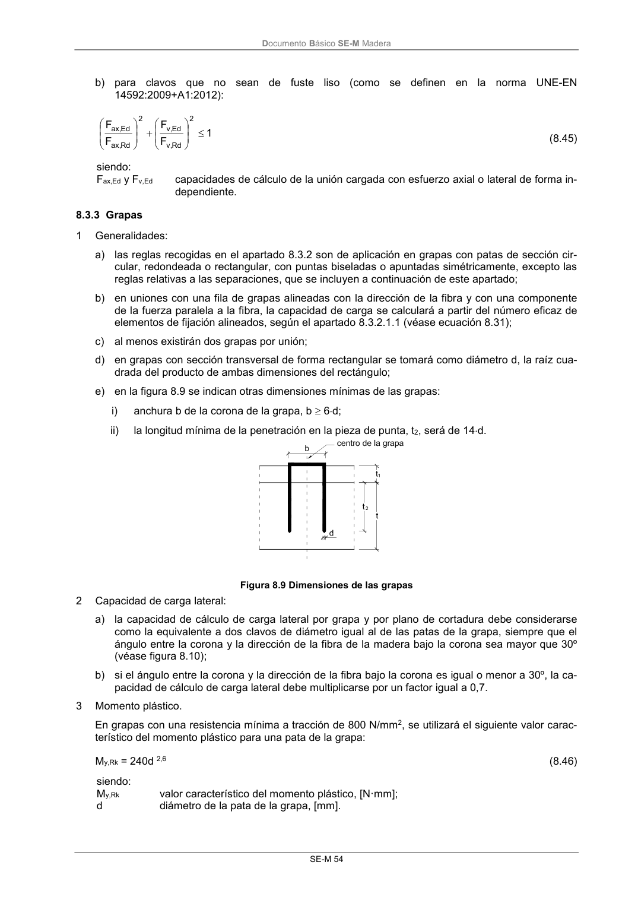
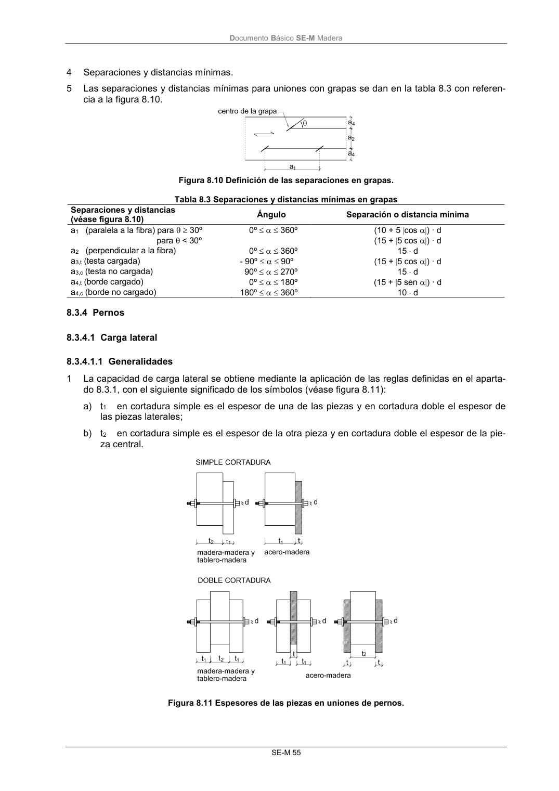

DB-SE-M · 8.3.3 Grapas · versión 2019-12-20 · capa oficial
Formatos: JSON compacto · Markdown · PDF fuente
Ámbito del documento · texto del ámbito · documento y tablas
ID técnico a0117 · PDF pág. 60-61 · jerarquía no validada por persona · contrastado con el literal de la página 60 (candidato tipográfico); no validado por persona · padre: raíz
8.3.3 Grapas 1 Generalidades: a) las reglas recogidas en el apartado 8.3.2 son de aplicación en grapas con patas de sección cir- cular, redondeada o rectangular, con puntas biseladas o apuntadas simétricamente, excepto las reglas relativas a las separaciones, que se incluyen a continuación de este apartado; b) en uniones con una fila de grapas alineadas con la dirección de la fibra y con una componente de la fuerza paralela a la fibra, la capacidad de carga se calculará a partir del número eficaz de elementos de fijación alineados, según el apartado 8.3.2.1.1 (véase ecuación 8.31); c) al menos existirán dos grapas por unión; d) en grapas con sección transversal de forma rectangular se tomará como diámetro d, la raíz cua- drada del producto de ambas dimensiones del rectángulo; e) en la figura 8.9 se indican otras dimensiones mínimas de las grapas: i) anchura b de la corona de la grapa, b 6d; ii) la longitud mínima de la penetración en la pieza de punta, t2, será de 14d. Figura 8.9 Dimensiones de las grapas 2 Capacidad de carga lateral: a) la capacidad de cálculo de carga lateral por grapa y por plano de cortadura debe considerarse como la equivalente a dos clavos de diámetro igual al de las patas de la grapa, siempre que el ángulo entre la corona y la dirección de la fibra de la madera bajo la corona sea mayor que 30º (véase figura 8.10); b) si el ángulo entre la corona y la dirección de la fibra bajo la corona es igual o menor a 30º, la ca- pacidad de cálculo de carga lateral debe multiplicarse por un factor igual a 0,7. 3 Momento plástico. En grapas con una resistencia mínima a tracción de 800 N/mm2, se utilizará el siguiente valor carac- terístico del momento plástico para una pata de la grapa: My,Rk = 240d 2,6 (8.46) siendo: My,Rk valor característico del momento plástico, [N·mm]; d diámetro de la pata de la grapa, [mm]. DocumentoBásico SE-M Madera SE-M 55 4 Separaciones y distancias mínimas. 5 Las separaciones y distancias mínimas para uniones con grapas se dan en la tabla 8.3 con referen- cia a la figura 8.10. Figura 8.10 Definición de las separaciones en grapas. Tabla 8.3 Separaciones y distancias mínimas en grapas Separaciones y distancias (véase figura 8.10) Ángulo Separación o distancia mínima a1 (paralela a la fibra) para 30º para < 30º 0º 360º (10 + 5 cos ) · d (15 + 5 cos ) · d a2 (perpendicular a la fibra) 0º 360º 15 d a3,t (testa cargada) - 90º 90º (15 + 5 cos ) · d a3,c (testa no cargada) 90º 270º 15 d a4,t (borde cargado) 0º 180º (15 + 5 sen ) · d a4,c (borde no cargado) 180º 360º 10 d


PDF fuente redistribuible: copia fiel enlazada en esta página (SHA256 verificado).